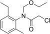

acetochlor

Definition: Acetochlor is an herbicide developed by Monsanto Company and Zeneca. It is a member of the class of herbicides known as chloroacetanilides. Its mode of action is elongase inhibition, and inhibition of geranylgeranyl pyrophosphate (GGPP) cyclization enzymes, part of the gibberellin pathway. It carries high risks of environmental contamination.
Source: Wikipedia
Wikipedia Page
Wikidata Page